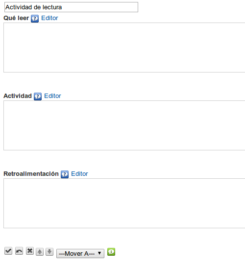

Actividad de lectura
Utilizaremos este iDevice preferentemente para proponer a los alumnos una lectura acompañada de una actividad que deberán completar. Da la posibilidad de utilizar una retroalimentación que el alumno podrá visualizar cuando lo estime oportuno.
Al seleccionar el iDevice "Actividad de lectura" del listado de iDevices se nos mostrará lo siguiente en nuestro eXeLearning:

En la parte superior, tendremos la posibilidad de modificar el título del iDevice.
En el campo "Qué leer" escribiremos el texto propuesto a nuestros alumnos.
En el campo "Actividad" les indicamos las instrucciones para realizar la actividad de lectura propuesta.
Por último en el campo "Retroalimentación", incluimos aquellas informaciones e indicaciones que puedan servir de ayuda o complemento a nuestro alumno para realizar la actividad propuesta.
Recuerda:
En los iDevices con varias cajas de texto, puedes escribir directamente en ellas. Si quieres que se muestre el editor, tienes que hacer clic en el enlace "Editor" .
De esta forma la creación de actividades es más sencilla, rápida e intuitiva.
Ejemplo de Actividad de lectura: Oyendo "El Quijote"
En un lugar de la Mancha, de cuyo nombre no quiero acordarme, no ha mucho tiempo que vivía un hidalgo de los de lanza en astillero, adarga antigua, rocín flaco y galgo corredor. Una olla de algo más vaca que carnero, salpicón las más noches, duelos y quebrantos los sábados, lentejas los viernes, algún palomino de añadidura los domingos, consumían las tres partes de su hacienda. El resto della concluían sayo de velarte, calzas de velludo para las fiestas con sus pantuflos de lo mismo, los días de entre semana se honraba con su vellori de lo más fino. Tenía en su casa una ama que pasaba de los cuarenta, y una sobrina que no llegaba a los veinte, y un mozo de campo y plaza, que así ensillaba el rocín como tomaba la podadera. Frisaba la edad de nuestro hidalgo con los cincuenta años, era de complexión recia, seco de carnes, enjuto de rostro; gran madrugador y amigo de la caza. Quieren decir que tenía el sobrenombre de Quijada o Quesada (que en esto hay alguna diferencia en los autores que deste caso escriben), aunque por conjeturas verosímiles se deja entender que se llama Quijana; pero esto importa poco a nuestro cuento; basta que en la narración dél no se salga un punto de la verdad.
Lee con atención el texto al mismo tiempo que escuchas el audio del capítulo uno de "El Quijote". A continuación, responde a la preguntas que te planteamos.
Practica eXe: insertando vídeo y audio
Realiza los siguientes procedimientos:
- Abre el archivo miarchivo2.elp que has creado en la actividad anterior (Puedes hacer doble clic sobre él).
- Selecciona el nodo "Insertamos vídeos".
- Crea un iDevice "Actividad de lectura" y modifica su título.
- Busca un audio de tu gusto. Descárgalo a tu equipo local (puedes utilizar este).
- Redacta un texto de lectura dentro del iDevice. Dale el formato que desees.
- Inserta el audio que has descargado previamente en la opción "Insertar/editar medio embebido"
- Debajo del audio, incluye una información sobre la actividad.
- En la opción "Retroalimentación" redacta las preguntas o actividades. Incorpora, si lo deseas, alguna información complementaria.
- Una vez terminado, haz clic en el botón para ver el resultado.
- Guarda los cambios. (Archivo > Guardar)
Si tienes alguna duda puedes consultar el siguiente vídeo:
eXeLearning. iDevice Actividad de lectura. Insertamos audio mp3. (CC by)
Obra publicada con Licencia Creative Commons Reconocimiento Compartir igual 4.0